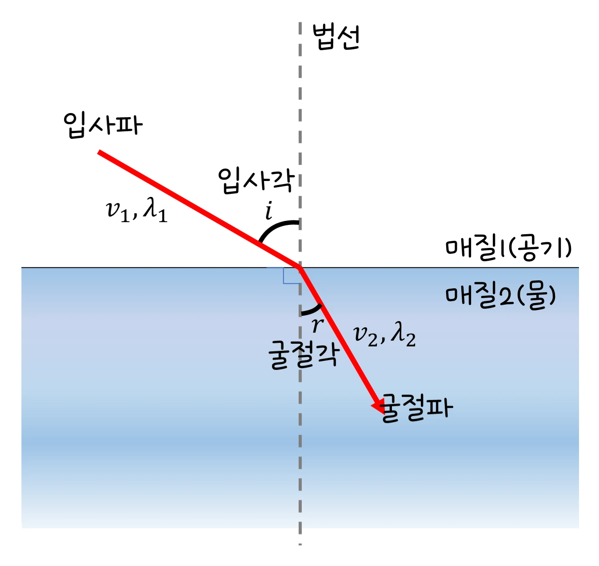

중2 과학 · 빛과 파동 · 웹툰 3화 「빛이 꺾여요 — 빛의 굴절과 렌즈」
실험에서 빛을 공기에서 물로 여러 각도로 넣어 굴절각을 재고, 볼록·오목 렌즈 앞의 물체 거리를 바꿔 상을 관찰했습니다. 빛은 물로 들어가며 법선 쪽으로 꺾였고, 오목 렌즈는 항상 작고 똑바로 선 허상만 만들었습니다. 굴절의 원리와 렌즈, 눈의 구조를 정리합니다.
실험 데이터 되짚기
① 공기 → 물(n = 1.33)의 굴절, ② 초점 거리 25 cm 렌즈의 상입니다.
| 입사각 | 20° | 40° | 60° |
|---|---|---|---|
| 굴절각 | 14.9° | 28.9° | 40.6° |
| sin 입사각 ÷ sin 굴절각 | 1.33 | 1.33 | 1.33 |
굴절각은 항상 입사각보다 작고(법선 쪽으로), sin 비는 굴절률 1.33으로 일정합니다. 렌즈(f = 25 cm): 볼록 · 50 cm → 실상 1배, 30 cm → 실상 5배, 15 cm → 허상 2.5배 / 오목 렌즈는 거리와 관계없이 항상 작고 똑바로 선 허상.
빛이 공기에서 물·유리로 들어가면 속력이 느려져 경계에서 진행 방향이 꺾입니다(굴절). 공기 → 물처럼 느려지는 물질로 들어갈 때는 법선 쪽으로, 반대로 나올 때는 법선에서 멀어지는 쪽으로 꺾입니다. 꺾이는 정도는 스넬 법칙 n₁ sin θ₁ = n₂ sin θ₂를 따르고 물의 굴절률은 약 1.33입니다. 컵 속 빨대가 꺾여 보이고 물속 물고기가 실제보다 얕아 보이는 것, 프리즘이 무지개를 만드는 것(색마다 굴절률이 조금 다름)이 굴절입니다.
교재 그림
공기에서 물로 들어가는 빛

입사각 i와 굴절각 r은 모두 법선(점선)에서 잽니다. 물속에서 속력(v₂)이 느려지므로 r < i — 법선 쪽으로 꺾입니다.
움직여 보기
공기에서 물로 — 느려지면서 법선 쪽으로 꺾인다
노란 점은 같은 시간 간격으로 찍은 빛의 위치입니다. 물속에서 점 간격이 좁아지는 것 — 빛이 1.33배 느려졌다는 뜻이고, 그래서 법선 쪽으로 꺾입니다(흐린 점선은 꺾이지 않았다면 갔을 길). 20° → 14.9°, 40° → 28.9°, 60° → 40.6°. 0°로 수직으로 넣으면 꺾이지 않습니다.
| 렌즈 | 모양 | 빛 | 상 | 쓰임 |
|---|---|---|---|---|
| 볼록 렌즈 | 가운데가 두꺼움 | 모음 | 초점 밖: 거꾸로 실상 / 초점 안: 크게 보이는 허상 | 돋보기, 원시 교정 안경, 카메라 |
| 오목 렌즈 | 가운데가 얇음 | 퍼뜨림 | 항상 작고 똑바로 선 허상 | 근시 교정 안경 |
눈은 수정체(볼록 렌즈)로 망막에 실상을 맺습니다. 수정체 두께를 바꿔 초점 거리를 조절하고, 망막보다 앞에 상이 맺히면 근시(오목 렌즈로 교정), 뒤에 맺히면 원시(볼록 렌즈로 교정)입니다. 렌즈 공식 1/a + 1/b = 1/f(볼록 +25, 오목 −25), 배율 = |b| ÷ a.
움직여 보기
볼록 렌즈·오목 렌즈 앞에서 물체를 옮기면
주황 빛: 축과 나란히 와서 렌즈를 지난 뒤 초점 F를 지남(오목 렌즈는 앞쪽 F에서 나온 것처럼 퍼짐). 초록 빛: 렌즈 한가운데를 곧게 지남. 볼록 렌즈에서 a = 50 → 같은 크기 실상, 30 → 5배 실상, 15 → 2.5배 허상(돋보기). 오목 렌즈는 언제나 작고 똑바로 선 허상입니다. (f = ±25 cm)
렌즈 공식은 얇은 렌즈 근사입니다. 두꺼운 렌즈나 가장자리로 들어온 빛은 조금 다른 곳에 모여 상이 흐려지고(수차), 색깔마다 굴절률이 달라 색 번짐이 생깁니다 — 카메라 렌즈가 여러 장으로 된 까닭입니다. 안경·카메라·현미경·망원경·광섬유(전반사)가 모두 굴절을 이용합니다.
물 n ≈ 1.33 · 볼록 f = +25 cm, 오목 f = −25 cm · 배율 = |b| ÷ a
“빛이 공기에서 물처럼 다른 물질(매질)로 들어갈 때 속력이 달라지면서 진행 방향이 꺾여! 이걸 ‘빛의 굴절’이라고 해.”
웹툰 3화 · 민재: “컵에 담긴 빨대가 왜 꺾여 보이지?” — 공기에서 물로 들어갈 땐 속력이 느려져 실제보다 얕아 보인다.
“망막보다 앞에 상이 맺히면 근시(오목렌즈로 교정), 망막보다 뒤에 맺히면 원시(볼록렌즈로 교정)야.”
웹툰 3화 · 지유: “그럼 우리 눈 속에도 렌즈가 있는 거야?” 피지: 눈의 수정체가 볼록렌즈 역할을 해서 빛을 모아 망막에 상을 맺게 한다.
sin θ₂ = 0.5 ÷ 1.33 ≈ 0.376 → θ₂ ≈ 22°. 입사각보다 작아져 법선 쪽으로 꺾입니다. 물에서 공기로 나올 때는 반대로 22° → 30°로 벌어집니다.
1/b = 1/25 − 1/30 = 1/150 → b = +150 cm. 렌즈 뒤 150 cm에 거꾸로 선 실상, 배율 150 ÷ 30 = 5배. 물체가 초점에 가까울수록 실상이 멀리, 크게 생깁니다.